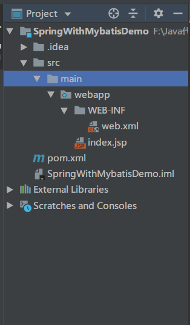

1. idea项目创建
先按照下图，创建一个新的Maven webapp项目：
再填写相应的项目名称：

创建好的项目结构如下：

再把需要的包在pom.xml中引入，包比较多，也可以在开发需要时再补充进来：1
2
3
4
5
6
7
8
9
10
11
12
13
14
15
16
17
18
19
20
21
22
23
24
25
26
27
28
29
30
31
32
33
34
35
36
37
38
39
40
41
42
43
44
45
46
47
48
49
50
51
52
53
54
55
56
57
58
59
60
61
62
63
64
65
66
67
68
69
70
71
72
73
74
75
76
77
78
79
80
81
82
83
84
85
86
87
88
89
90
91
92
93
94
95
96
97
98
99
100
101
102
103
104
105
106
107
108
109
110
111
112
113
114
115
116
117
118
119
120
121
122
123
124
125
126
127
128
129
130
131
132
133
134
135
136
137
138
139
140
141
142
143
144
145
146
147
148
149
150
151
152
153
154
155
156
157
158
159
160
161
162
163
164
165
166
167
168
169
170
171
172
173
174
175
176
177
178
179
180
181
182
183
184
185
186
187
188
189
190
191
192
<project xmlns="http://maven.apache.org/POM/4.0.0" xmlns:xsi="http://www.w3.org/2001/XMLSchema-instance"
xsi:schemaLocation="http://maven.apache.org/POM/4.0.0 http://maven.apache.org/xsd/maven-4.0.0.xsd">
<modelVersion>4.0.0</modelVersion>
<groupId>com.liuzhian</groupId>
<artifactId>SpringWithMybatisDemo</artifactId>
<version>1.0-SNAPSHOT</version>
<packaging>war</packaging>
<name>SpringWithMybatisDemo Maven Webapp</name>
<!-- FIXME change it to the project's website -->
<url>http://www.example.com</url>
<properties>
<project.build.sourceEncoding>UTF-8</project.build.sourceEncoding>
<maven.compiler.source>1.7</maven.compiler.source>
<maven.compiler.target>1.7</maven.compiler.target>
</properties>
<dependencies>
<!-- junit测试包 -->
<dependency>
<groupId>junit</groupId>
<artifactId>junit</artifactId>
<version>4.11</version>
<!--表示开发的时候引入，发布的时候不会加载此包-->
<scope>test</scope>
</dependency>
<!--spring 核心包-->
<dependency>
<groupId>org.springframework</groupId>
<artifactId>spring-core</artifactId>
<version>4.3.18.RELEASE</version>
</dependency>
<dependency>
<groupId>org.springframework</groupId>
<artifactId>spring-beans</artifactId>
<version>4.3.18.RELEASE</version>
</dependency>
<dependency>
<groupId>org.springframework</groupId>
<artifactId>spring-web</artifactId>
<version>4.2.8.RELEASE</version>
</dependency>
<dependency>
<groupId>org.springframework</groupId>
<artifactId>spring-aop</artifactId>
<version>4.3.18.RELEASE</version>
</dependency>
<dependency>
<groupId>org.springframework</groupId>
<artifactId>spring-webmvc</artifactId>
<version>4.2.8.RELEASE</version>
</dependency>
<dependency>
<groupId>org.springframework</groupId>
<artifactId>spring-context</artifactId>
<version>4.3.18.RELEASE</version>
</dependency>
<dependency>
<groupId>org.springframework</groupId>
<artifactId>spring-context-support</artifactId>
<version>4.2.8.RELEASE</version>
</dependency>
<dependency>
<groupId>org.springframework</groupId>
<artifactId>spring-test</artifactId>
<version>4.3.18.RELEASE</version>
</dependency>
<!--mybatis核心包-->
<dependency>
<groupId>org.mybatis</groupId>
<artifactId>mybatis</artifactId>
<version>3.4.6</version>
</dependency>
<!--mybatis - Spring集成中间件-->
<dependency>
<groupId>org.mybatis</groupId>
<artifactId>mybatis-spring</artifactId>
<version>1.3.0</version>
</dependency>
<!--J2EE jar包-->
<dependency>
<groupId>javax</groupId>
<artifactId>javaee-api</artifactId>
<version>7.0</version>
</dependency>
<!-- mysql驱动包 -->
<dependency>
<groupId>mysql</groupId>
<artifactId>mysql-connector-java</artifactId>
<version>8.0.13</version>
</dependency>
<!-- 导入dbcp的jar包，用来在applicationContext.xml中配置数据库 -->
<dependency>
<groupId>commons-dbcp</groupId>
<artifactId>commons-dbcp</artifactId>
<version>1.2.2</version>
</dependency>
<!--JSTL标签类-->
<dependency>
<groupId>jstl</groupId>
<artifactId>jstl</artifactId>
<version>1.2</version>
</dependency>
<!-- 日志文件管理包 -->
<dependency>
<groupId>log4j</groupId>
<artifactId>log4j</artifactId>
<version>1.2.17</version>
</dependency>
<!-- fast json 包 -->
<dependency>
<groupId>com.alibaba</groupId>
<artifactId>fastjson</artifactId>
<version>1.1.41</version>
</dependency>
<!-- 上传组件包 -->
<dependency>
<groupId>commons-fileupload</groupId>
<artifactId>commons-fileupload</artifactId>
<version>1.3.1</version>
</dependency>
<dependency>
<groupId>commons-io</groupId>
<artifactId>commons-io</artifactId>
<version>2.4</version>
</dependency>
<dependency>
<groupId>commons-codec</groupId>
<artifactId>commons-codec</artifactId>
<version>1.9</version>
</dependency>
</dependencies>
<build>
<finalName>SpringWithMybatisDemo</finalName>
<pluginManagement><!-- lock down plugins versions to avoid using Maven defaults (may be moved to parent pom) -->
<plugins>
<plugin>
<artifactId>maven-clean-plugin</artifactId>
<version>3.1.0</version>
</plugin>
<!-- see http://maven.apache.org/ref/current/maven-core/default-bindings.html#Plugin_bindings_for_war_packaging -->
<plugin>
<artifactId>maven-resources-plugin</artifactId>
<version>3.0.2</version>
</plugin>
<plugin>
<artifactId>maven-compiler-plugin</artifactId>
<version>3.8.0</version>
</plugin>
<plugin>
<artifactId>maven-surefire-plugin</artifactId>
<version>2.22.1</version>
</plugin>
<plugin>
<artifactId>maven-war-plugin</artifactId>
<version>3.2.2</version>
</plugin>
<plugin>
<artifactId>maven-install-plugin</artifactId>
<version>2.5.2</version>
</plugin>
<plugin>
<artifactId>maven-deploy-plugin</artifactId>
<version>2.8.2</version>
</plugin>
</plugins>
</pluginManagement>
</build>
</project>
2. 创建各模块文件夹
按照下图，把resources文件夹、Java源代码的文件夹创建好：
再创建好spring 和 mybatis的配置文件目录，以及webapp下的相应目录，最后创建好的工程如下：
3 创建数据库
创建两张数据库表，分别保存user信息和book信息，然后插入几条sample数据，SQL执行语句如下：1
2
3
4
5
6
7
8
9
10
11
12
13
14
15
16
17
18
19
20
21
22
23
24CREATE TABLE tb_user(
id INT PRIMARY KEY AUTO_INCREMENT,
loginname VARCHAR(50) UNIQUE,
password VARCHAR(18),
phone VARCHAR(18),
address VARCHAR(255)
);
INSERT INTO tb_user(loginname,password,phone,address)
VALUES ('andy','123456','17777777777','武汉');
CREATE TABLE tb_book(
id INT(11) PRIMARY KEY AUTO_INCREMENT,
name VARCHAR(54),
author VARCHAR(54),
publicationdate DATE,
publication VARCHAR(18),
price DOUBLE,
image VARCHAR(54),
remark VARCHAR(60)
);
INSERT INTO tb_book(name,author,publicationdate,publication,price,image,remark)
VALUES('Python网络编程','andy','2020-01-11','XXX出版社','54.9',
'python.jpg','这是一本python网络编程的入门书籍');
4. 只使用Mybatis
这里我们先验证一下只用Mybatis的情况，步骤大致如下：
4.1 mybatis文件夹配置
在mybatis文件夹下创建一个db.properties文件，配置数据库的的一些连接信息如下：1
2
3
4driver=com.mysql.cj.jdbc.Driver
url=jdbc:mysql://localhost:3306/mybatis?serverTimezone=GMT%2B8
username=root
password=root
4.2 domain层创建POJO
按照数据tb_user表创建一个POJO类User：1
2
3
4
5
6
7
8
9
10
11
12
13
14
15
16
17
18
19public class User implements Serializable {
private Integer id;
private String loginname;
private String password;
private String phone;
private String address;
public User() {
}
public User(Integer id, String loginname, String password, String phone, String address) {
this.id = id;
this.loginname = loginname;
this.password = password;
this.phone = phone;
this.address = address;
}
// Getters and Setters
}
4.3 dao层创建UserDao
1 | package com.liuzhian.dao; |
4.4 mapping层定义SQL
1 |
|
4.5 mybatis-config配置
1 |
|
4.6 测试
写一个简单的代码，测试获取数据库tb_user表中的所有User，1
2
3
4
5
6
7
8
9
10
11
12
13
14
15
16
17
18
19
20
21
22
23
24
25
26
27
28
29
30
31
32
33
34
35
36
37
38
39
40
41import com.liuzhian.dao.UserDao;
import com.liuzhian.domain.User;
import org.apache.ibatis.session.SqlSession;
import org.apache.ibatis.session.SqlSessionFactory;
import org.apache.ibatis.session.SqlSessionFactoryBuilder;
import java.io.InputStream;
import java.util.List;
/**
* @ClassName UserDaoTest
* @Deacription // TODO
* @Author LiuZhian
* @Date 2020-01-11 13:02
* @Version 1.0
**/
public class UserDaoTest {
public static void main(String[] args) {
testMybatis();
}
private static void testMybatis() {
// 获得Mybatis配置文件流
InputStream config = UserDaoTest.class.getClassLoader().getResourceAsStream("mybatis/mybatis-config.xml");
// 创建sql会话工厂
SqlSessionFactory factory = new SqlSessionFactoryBuilder().build(config);
//获得会话对象
SqlSession session = factory.openSession(true);
try {
//通过MyBatis实现接口UserDAO，返回实例
UserDao userDao = session.getMapper(UserDao.class);
List<User> users = userDao.getAllUsers();
for (User u : users) {
System.out.println(u);
}
} finally {
session.close();
}
}
}
因为此时表中只有一个item，console输出如下：[ID: 1,loginname: andy,password: 123456,phone: 17777777777,address: 武汉]
5. Spring + Mybatis
上一节中，我们用的是纯Mybatis的配置方式，于是我们首先要读取mybatis-config.xml文件，获取到一个InputStream对象，作为输入参数送给SqlSessionFactory，然后再获取一个session，再访问数据库。
现在这些任务可以交给Spring来完成，原来的mybatis-config.xml配置文件作用就不大了，全部移到spring文件夹下的spring-mybatis.xml文件中。
5.1 配置文件更改
spring-mybatis.xml文件具体配置如下：1
2
3
4
5
6
7
8
9
10
11
12
13
14
15
16
17
18
19
20
21
22
23
24
25
26
27
28
29
30
31
32
33
34
35
36
37
38
39
40
41
42
43
44
45
46
47
48
49
50
51
52
53
54
55
56
57
58
59
<beans xmlns="http://www.springframework.org/schema/beans"
xmlns:xsi="http://www.w3.org/2001/XMLSchema-instance"
xmlns:context="http://www.springframework.org/schema/context"
xsi:schemaLocation="http://www.springframework.org/schema/beans http://www.springframework.org/schema/beans/spring-beans.xsd http://www.springframework.org/schema/context http://www.springframework.org/schema/context/spring-context.xsd">
<!-- 引入数据库配置文件 -->
<bean id="propertyConfigurer" class="org.springframework.beans.factory.config.PropertyPlaceholderConfigurer">
<property name="locations">
<list>
<value>classpath:mybatis/db.properties</value>
<!--要是有多个配置文件，只需在这里继续添加即可 -->
</list>
</property>
</bean>
<!--配置数据库源-->
<bean id="dataSource" class="org.springframework.jdbc.datasource.DriverManagerDataSource">
<!-- 使用properties来配置 -->
<property name="driverClassName">
<value>${driver}</value>
</property>
<property name="url">
<value>${url}</value>
</property>
<property name="username">
<value>${username}</value>
</property>
<property name="password">
<value>${password}</value>
</property>
</bean>
<!-- 自动扫描了所有的XxxxMapper.xml映射文件对应的mapper接口文件，
这样就不用一个一个手动配置Mpper的映射了，
只要Mapper接口类和Mapper映射文件对应起来就可以了。 -->
<bean class="org.mybatis.spring.mapper.MapperScannerConfigurer">
<property name="basePackage" value="com.liuzhian.dao.*"/>
</bean>
<!-- 配置Mybatis的文件 ，mapperLocations配置XXXMapper.xml文件位置，
configLocation配置mybatis-config文件位置-->
<bean id="sqlSessionFactory" class="org.mybatis.spring.SqlSessionFactoryBean">
<property name="dataSource" ref="dataSource" />
<property name="mapperLocations" value="classpath:mybatis/mapping/*.xml"/>
<property name="configLocation" value="classpath:mybatis/mybatis-config.xml" />
</bean>
<!-- 自动扫描注解的bean -->
<context:component-scan base-package="com.liuzhian.*" />
<!-- 用eclipse的同学说不用配置该项（未验证），我也认为Mapper文件已经和接口对应起来了也不用配置的，
但是IDEA一直报错无法注入UserDao，增加该配置后就ok了。每一个Mapper都需要注入sqlSessionFactory和指定映射接口 -->
<bean id="userDao" class="org.mybatis.spring.mapper.MapperFactoryBean">
<property name="sqlSessionFactory" ref="sqlSessionFactory"></property>
<property name="mapperInterface" value="com.liuzhian.dao.UserDao"></property>
</bean>
</beans>
而原来的mybatis-config.xml文件配置基本都可以注释掉，但是要保留<typeAliases>标签，这样是为了可以在xxxMapper.xml映射文件中，在写SQL的resultType属性时可以直接写类名，而不用写全限定名称。如下：1
2
3
4
5
6
7
8
9
10
11
12
13
14
15
16
17
18
19
20
21
22
23
24
25
26
27
28
29
30
31
32
33
34
35
PUBLIC "-//mybatis.org//DTD Config 3.0//EN"
"http://mybatis.org/dtd/mybatis-3-config.dtd">
<!--没有集成spring时可以用，集成spring后这个文件主要内容都做spring配置文件中完成-->
<configuration>
<!-- <!– 指定数据库连接信息的位置 –>-->
<!-- <properties resource="mybatis/db.properties"></properties>-->
<!--设置类别名，默认引入该包下的所有类，这样在写Mapper文件的时候就可以只写domain的类名，而不用写全名那么麻烦 -->
<typeAliases>
<package name="com.liuzhian.domain"/>
</typeAliases>
<!-- <!–配置mysql的链接信息，数据从配置文件里面读取，注意名称要对应–>-->
<!-- <environments default="development">-->
<!-- <environment id="development">-->
<!-- <transactionManager type="JDBC" />-->
<!-- <dataSource type="POOLED">-->
<!-- <property name="driver" value="${driver}"/>-->
<!-- <property name="url" value="${url}"/>-->
<!-- <property name="username" value="${username}"/>-->
<!-- <property name="password" value="${password}"/>-->
<!-- </dataSource>-->
<!-- </environment>-->
<!-- </environments>-->
<!-- <!–引入映射文件 –>-->
<!-- <mappers>-->
<!-- <mapper resource="mybatis/mapping/UserDaoMapper.xml" />-->
<!-- </mappers>-->
</configuration>
5.2 测试代码
和之前纯使用Mybatis一样，写一个测试函数testSpringMybatis()如下：1
2
3
4
5
6
7
8
9
10
11
12
13
14
15private static void testSpringMybatis() {
ApplicationContext context = new ClassPathXmlApplicationContext("spring/spring-mybatis.xml");
SqlSessionFactory sqlSessionFactory = (SqlSessionFactory) context.getBean("sqlSessionFactory");
SqlSession session = sqlSessionFactory.openSession(true);
try {
//通过MyBatis实现接口UserDAO，返回实例
UserDao userDao = session.getMapper(UserDao.class);
List<User> users = userDao.getAllUsers();
for (User u : users) {
System.out.println(u);
}
} finally {
session.close();
}
}
得到预期的输出[ID: 1,loginname: andy,password: 123456,phone: 17777777777,address: 武汉]
6. 集成Spring MVC
6.1 配置Spring-mvc.xml
1 |
|
6.2 配置web.xml
web.xml不仅要处理转发请求，还要加载Spring文件和Spring MVC的配置文件，添加上下文监听器、编码过滤等。非常重要的一个文件。1
2
3
4
5
6
7
8
9
10
11
12
13
14
15
16
17
18
19
20
21
22
23
24
25
26
27
28
29
30
31
32
33
34
35
36
37
38
39
40
41
42
43
44
45
46
47
48
49
50
51
52
53
54
55
56
57
58
59
60
61
62
63
64
65
66
67
68
69
70
71
72
73
74
75
76
77
<web-app xmlns="http://java.sun.com/xml/ns/javaee"
xmlns:xsi="http://www.w3.org/2001/XMLSchema-instance"
xsi:schemaLocation="http://java.sun.com/xml/ns/javaee
http://java.sun.com/xml/ns/javaee/web-app_3_0.xsd"
version="3.0">
<!--welcome pages-->
<welcome-file-list>
<welcome-file>index.jsp</welcome-file>
</welcome-file-list>
<!-- 读取spring配置文件 -->
<context-param>
<param-name>contextConfigLocation</param-name>
<param-value>classpath:spring/spring-mybatis.xml</param-value>
</context-param>
<!--spring上下文监听器-->
<listener>
<listener-class>org.springframework.web.context.ContextLoaderListener</listener-class>
</listener>
<!--配置springmvc DispatcherServlet,转发前端或后台发来的请求-->
<servlet>
<servlet-name>springMVC</servlet-name>
<servlet-class>org.springframework.web.servlet.DispatcherServlet</servlet-class>
<init-param>
<!--resources目录下需要新建一个spring文件夹-->
<param-name>contextConfigLocation</param-name>
<param-value>classpath:spring/spring-mvc.xml</param-value>
</init-param>
<load-on-startup>1</load-on-startup>
<async-supported>true</async-supported>
</servlet>
<!--让spring MVC 的前端控制器拦所有请求-->
<servlet-mapping>
<servlet-name>springMVC</servlet-name>
<url-pattern>/</url-pattern>
</servlet-mapping>
<!--解决乱码问题-->
<filter>
<filter-name>characterEncodingFilter</filter-name>
<filter-class>org.springframework.web.filter.CharacterEncodingFilter</filter-class>
<init-param>
<param-name>encoding</param-name>
<param-value>UTF-8</param-value>
</init-param>
<init-param>
<param-name>forceEncoding</param-name>
<param-value>true</param-value>
</init-param>
</filter>
<filter-mapping>
<filter-name>characterEncodingFilter</filter-name>
<url-pattern>/*</url-pattern>
</filter-mapping>
<!-- 错误跳转页面 -->
<error-page>
<!-- 404客户端路径不正确 -->
<error-code>404</error-code>
<location>/WEB-INF/views/errorpage/404.jsp</location>
</error-page>
<error-page>
<!-- 客户端没有访问权限，访问被禁止 -->
<error-code>405</error-code>
<location>/WEB-INF/views/errorpage/405.jsp</location>
</error-page>
<error-page>
<!-- 服务器内部错误 -->
<error-code>500</error-code>
<location>/WEB-INF/views/errorpage/500.jsp</location>
</error-page>
</web-app>
6.3 编写服务层
service层的每个方法都是一个业务逻辑，在编码时，需要先定义好服务的接口，再进行具体的实现。而在实现中，又会用到DAO层的接口拿到数据，这里的“接口”其实是有具体的实现的，那就是mybatis中预定的那些SQL语句，这需要在编写好SQL Mapper时注册好相应的DAO层接口。
这里我们先定义一个UserService，如下：1
2
3
4
5
6
7
8
9
10
11
12
13
14
15
16
17package com.liuzhian.service;
import com.liuzhian.domain.User;
import java.util.List;
/**
* @ClassName UserService
* @Deacription // TODO
* @Author LiuZhian
* @Date 2020-01-11 14:21
* @Version 1.0
**/
public interface UserService {
List<User> getAllUsers();
}
再定义一个UserServiceImpl，如下：1
2
3
4
5
6
7
8
9
10
11
12
13
14
15
16
17
18
19
20
21
22
23
24
25
26
27
28
29
30
31
32
33package com.liuzhian.service;
import com.liuzhian.dao.UserDao;
import com.liuzhian.domain.User;
import org.springframework.context.annotation.Scope;
import org.springframework.stereotype.Service;
import javax.annotation.Resource;
import java.util.List;
/**
* @ClassName UserServiceImpl
* @Deacription // TODO
* @Author LiuZhian
* @Date 2020-01-11 14:27
* @Version 1.0
**/
// @Service("userServiceImpl")用于将当前类注释为一个Spring的bean，名为userServiceImpl
("userServiceImpl")
// @Scope("prototype")设定每次访问都创建一个新对象，通过@Resource自动注入userDao
("prototype")
public class UserServiceImpl implements UserService {
// userDao是一个mybatis的mapper接口类，注册后会自动寻找相应的SQL语句执行
private UserDao userDao;
public List<User> getAllUsers() {
return userDao.getAllUsers();
}
}
6.4 编写控制器
在controller层下新建一个UserController控制器，如下：1
2
3
4
5
6
7
8
9
10
11
12
13
14
15
16
17
18
19
20
21
22
23
24
25
26
27
28
29
30
31
32
33
34
35
36
37
38package com.liuzhian.controller;
import com.liuzhian.domain.User;
import com.liuzhian.service.UserService;
import org.springframework.stereotype.Controller;
import org.springframework.web.bind.annotation.RequestMapping;
import org.springframework.web.servlet.ModelAndView;
import javax.annotation.Resource;
import java.util.List;
/**
* @ClassName UserController
* @Deacription // TODO
* @Author LiuZhian
* @Date 2020-01-11 14:20
* @Version 1.0
**/
public class UserController {
private UserService userService;
("/page1")
public ModelAndView getUser()
{
ModelAndView modelAndView=new ModelAndView("page1");
List<User> users=userService.getAllUsers();
System.out.println(users);
modelAndView.addObject("user0",users.get(0));
return modelAndView;
}
}
6.5 编写视图层代码
这里我们就简单写一个JSP页面，名为page1，放置在/WEB-INF/views/文件夹下，如下：1
2
3
4
5
6
7
8
9
10
11
12<%@ page contentType="text/html;charset=UTF-8" language="java" %>
<html>
<head>
<title>页面1</title>
</head>
<body>
用户信息：
${user0.loginname}
${user0.phone}
${user0.address}
</body>
</html>
其他的主页、404页面、405页面、500页面也相应写好一下，这里就不列举了。
6.6 测试
在idea的 Run configuration中，添加一个Tomcat运行实例，再打开浏览器输入相应的地址，运行成功，如下图：
整个项目的结果图下图所示：